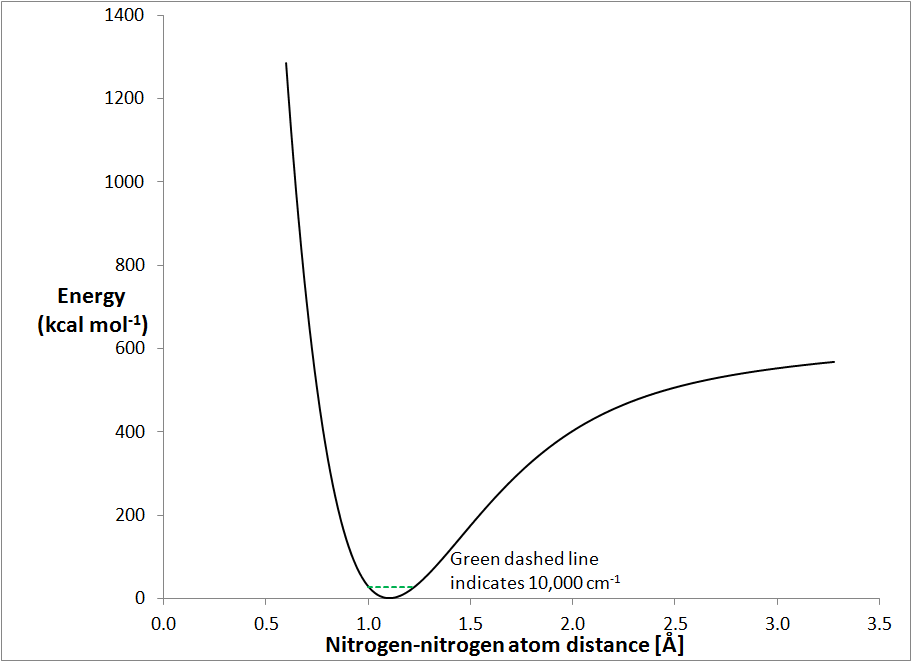
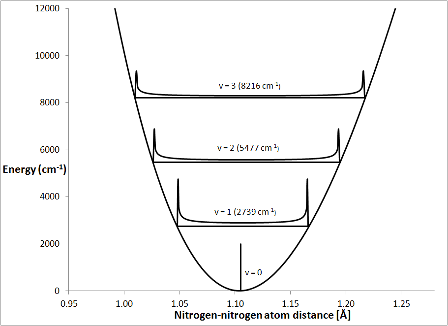
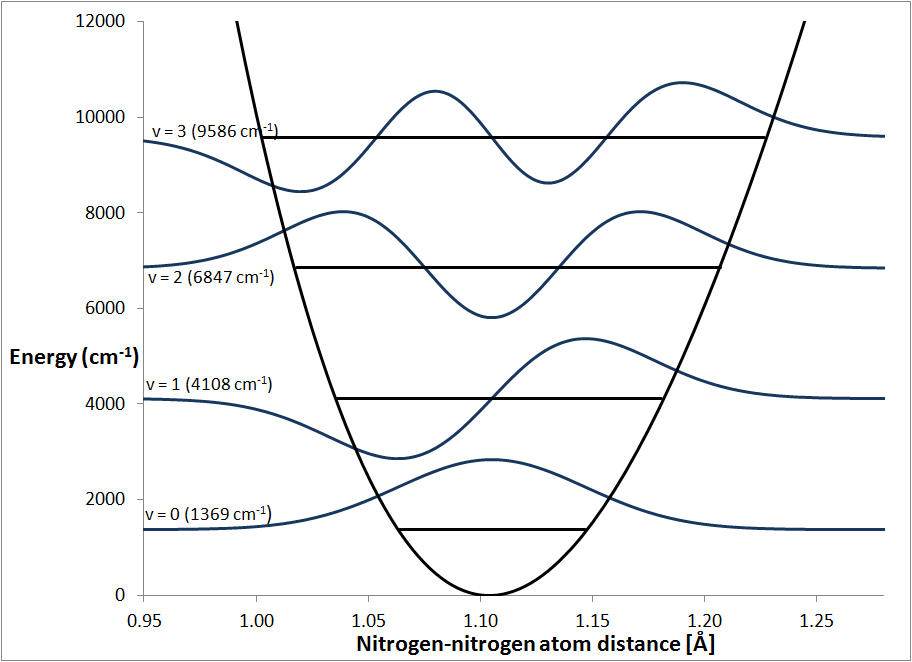
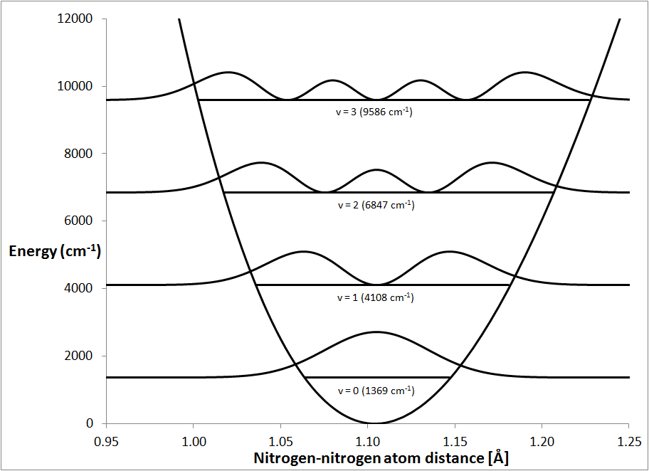
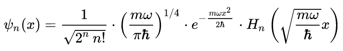
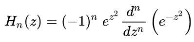

Back to Vibrational Relationships - Derivation
|
Figure 1 Morse stretching curve for a molecule of Nitrogen |
||
|  | ||
|
Figure 2
Probability distribution for the classical
vibration |
||
|  | ||
| Figure 3 | ||
|
Vibrational wavefunctions and their overtones |
||
|  | ||
| Figure 4 Probability distribution for vibrational wavefunctions |
||
|  |
The Morse curve is a plot of how the energy of a system changes with interatomic separation. The stretch curve for nitrogen, Fig. 1, is a typical Morse curve. At the bottom, the curve is almost perfectly parabolic, but as the N-N distance moves further and further from the equilibrium distance the curve becomes more and more non-parabolic. As the distance decreases, the potential energy increases rapidly - this is characteristic of atomic collision. As the distance increases, the potential energy increases but at large distances it starts to level off as the atoms separate.
All the vibrations of interest occur in the region below about 30 kcal mol-1, or 10,000 cm-1 (1 kcal mol-1 ≡ 349.755 cm-1). This is indicated in Fig. 1 by the green dotted line near the bottom of the graph. For diatomic molecules, the vibrational spectrum consists of one fundamental stretching vibration and its overtones.
Classically, a molecular vibration exhibits simple harmonic motion with the energy minimum centered at the equilibrium geometry. Any distortion along a normal mode of vibration would lead to the energy increasing as the square of the distortion. This results in the energy versus geometry curve being a parabola. In practice, a graph of energy versus time looks very similar to a sine curve, see Nitrogen DRC. In classical mechanics, each atom is in a definite position, and that position changes smoothly with time.
When the molecule is in its ground vibrational state the molecule is not vibrating, and the atoms are in their equilibrium position. This is represented in Fig. 2 by the small vertical line at 1.105 Å. For convenience, the energy at the bottom of the parabolic curve is defined as the zero of energy. When a nitrogen molecule is excited into its first vibrational state, v = 1, the atoms start to move in a simple harmonic motion. The time-average of this type of motion would show that, for most of their time, the atoms were near to their extreme stretched or compressed positions. This is indicated in Fig. 2 by the probability distribution of the atomic separations.
Vibrational overtones are vibrations that have an integer multiple of the fundamental frequency. Two overtones, the first, v = 2, and the second, v = 3, are shown here. These vibrations have a qualitatively similar distribution to the fundamental vibration.
In principle, in the classical description vibrations can have any energy, but, by experimental methods, it was found that only certain energies are allowed. Because of this, the classical description of vibrations is modified to include the restriction that vibrations can have only certain energies. For convenience, the lowest energy is defined as the ground vibrational state. In this state, that atoms are not moving and the energy is zero. Although this statement might sound obvious, it has to be stated, because it is, in fact, incorrect. A more correct description of the energy levels is given by quantum theory.
Solutions to Schrödinger's equation, Ĥ|ψ> = E|ψ>, for a simple harmonic oscillator consist of a set of eigenvalues, En, and their associated eigenvectors, ψn(x):
En = (n + ½)ħω

where
x is the signed distance in centimeters from the minimum, ħ is the reduced
Planck constant = 6.626 x 10-27 /(2π) = 1.0546 x 10-27 erg s, m is the reduced mass, ω is the angular frequency
= (f/m)½, f is the force-constant, and Hn(z) are the Hermite
polynomials: 
In explicit form,
the physicists' Hermite polynomials are H0(z) = 1, H1(z) =
2z, H2(z)
= 4z2 - 2, and H3(z) = 8z3
- 12x. Do NOT use the probabilists' Hermite functions - they are used
for something else. For the
vibration of a nitrogen molecule, m = 7.00335 amu = 1.16294 g,
f =
30.952 x 105 dynes x cm-1 = 30.952 J x m-2, ω = (30.952/(1.16294 x 10-23)½
= 5.159 x 1014 s-1. Fig. 3 shows the zero-point, the first excited state, and two overtone
vibrational wavefunctions. Lowest energy level In contrast to the classical model, the
wavefunction with the lowest energy, ψ0,
has a non-zero energy, instead it has the energy ½ħω.
This energy is normally referred to as the Zero-Point Energy or ZPE. Another
term for it is the Ground State Energy or GSE. Attempting to understanding
the origin of the ZPE is often a source of confusion. The simplest, correct but
incomplete, description is that, because
ψ0 has a non-zero
value on each side of the energy minimum, there is a non-zero probability of
finding the N-N separation either shorter or longer than the equilibrium
distance, and therefore its energy is non-zero. This description is often,
incorrectly, re-worded as saying that there is random motion of the atoms, and
that it is the kinetic and potential energy of this motion that gives rise to
the ZPE. If this description was correct, then an explanation would be
needed to say why the motion exists at all. The probability of finding an
N-N separation at any specific distance is shown in Fig. 4. For
ψ0, the probability is
a maximum at the equilibrium distance, and falls off steadily as the N-N
separation increases or decreases. If the system was vibrating, then the
probability distribution would need to be related to that of the classical mode
v=1, but it is qualitatively different, from this the conclusion can be made
that the system is not vibrating in the usual sense. An alternative
description is that
"quantum systems constantly fluctuate in their lowest energy state due to the
Heisenberg uncertainty principle."
The Heisenberg uncertainty principle (HUP) uses quantum theory to show that
there is a theoretical limit to the precision of pairs of observations.
For example, the HUP states that the position and momentum of a particle cannot
be measured with a precision greater than ½ħ. This is
frequently misinterpreted as saying that, because quantum theory predicts that
there must be uncertainty in measurements, the positions of the particles
involved "constantly
fluctuate." That is, the constraint on precision of measurement
(observation) is attributed to a physical cause (the particles are moving
continuously because of quantum effects). A more complete but more difficult explanation for ZPE is that the separation
of the atoms is described by the wavefunction. When a measurement of the N-N
separation is made, the wavefunction
collapses to
a point, this is part of
wave - particle
duality. The probability of finding the nitrogen atoms separated by any
specific distance is then proportional to the value of
ψ02.
By definition, before a measurement is made the separation of the atoms is not
known. Classically, the assumption is made that the atoms are separated by
a specific distance, but quantum mechanics says that the atom positions are
described by a wavefunction and are thus not definite. That is, before the
measurement is made, the atoms' positions are not only not known, the atoms do
not have positions. This is a restatement of the
Copenhagen
interpretation that "physical systems generally do not have definite
properties prior to being measured." This explanation might sound fantastic, but
there is ample evidence from quantum
entanglement experiments that the classical description of reality is
incomplete, and that the quantum picture, although incomplete in a different
sense, is more correct. Deriving the algebraic form of the quantum mechanical wavefunctions for a
harmonic oscillator is straightforward, and many different web-sites explain the
process,
for
example. On the other hand, although calculating the numerical
values of the wavefunctions for a harmonic oscillator is much simpler, there do
not seem to be any good websites that describe how to do it. For this
reason, the next section gives worked examples for the first four wavefunctions.
The following expressions can be used as examples of how the final algebraic
expression for the wavefunctions and overtones can be calculated. Much of
the working has very limited precision, mostly three to five digits, but the final expressions have at least
five digit precision. All the calculations and graphs presented here can be generated using an
Excel data-set. Quantum theory is used in the calculation of the the ZPE only. When the
eigenvalues from the
mass-weighted Hessian are constructed, they can be used for both the
classical and the quantum interpretations of molecular vibrations. In the
classical interpretation, the time-period is a constant, but the energy is not
defined. A pendulum swinging through a small arc would have the same frequency
as one swinging through a larger arc, but the energies of the two oscillations
would be different. In the quantum interpretation, the energies of
vibrations are quantized, and can be calculated using
En = (n + ½)ħω, where
ω is the angular frequency of the
vibration. E0 is the energy of the ground state, i.e., the
non-vibrating system. This is the ZPE for that vibration, and for a
systems of more than two atoms, the ZPE is the sum of the ZPE's for all the
vibrations. Although quantum theory predicts that the ground-state energies of vibration
are non-zero, all calculations that use vibrational energies involve an energy
difference. For example, an infra-red absorption band might correspond to
a transition from
E0 to E1, so
the fact that E0 is not zero is unimportant, it subtracts
out. Because of this, the ZPE of each fundamental vibration (E0)
is subtracted off all vibrations. In other words, the calculated eigenvalues are
used in all subsequent operations, and, with the exception of the ZPE, the "½"
in the calculation of
E1 and all the overtones is
ignored. An interesting point, not commonly appreciated, is that the vibrational
frequency, in cycles per second, of a molecular vibration is the same as the
frequency, in cycles per second, of the photon absorbed or emitted when a
transition between E0 and E1
occurs. So a photon that excites a molecule to
E1 would result in the molecule starting to vibrate
at the same frequency as the photon that was absorbed. All subsequent operations use
classical mechanics and the frequencies and
normal modes from the quantum calculation. The operations done using
classical mechanics include
calculation of: Thermochemical quantities (Internal energy, Cp, Entropy, ΔHf at different
temperatures, etc.) Trajectories (Intrinsic Reaction Coordinates (IRC) and
Dynamic Reaction Coordinates (DRC)) Normal Vibrations (E.g.,
Nitrogen
vibration) Explicit expressions for the wavefunctions
ψ0(x)
= (mω/πħ)¼ . exp(-mωx2/(2ħ))
= (1.1629 x 10-23 x 5.1589 x 1014)/(3.14159 x
1.0546 x 10-27)¼ . exp(-(1.16294
x 10-23 x
5.1589 x 1014)/(2 x
1.0546 x 10-27) x x2)
= (1.81086 x 1018)¼ .
exp(-2.8445 x 1018 x x2)
But x is normally expressed in Ångstroms,
so at this point it is convenient to change from cm to Å.
This involves a factor of 108. When this substitution
is made, the final algebraic form, in blue,
is obtained:
ψ0(x)
= 3.66846 x 104 x exp(-284.449 x
x2)
ψ1(x)
= (21 x 1!)-½(mω/πħ)¼ . exp(-mωx2/(2ħ))
. 2(mω/ħ)½
x x x 10-8
(x in
Å at this point)
= 0.7071 x 3.6684 x 104 x exp(-284.449 x
x2)
x 2 x ((1.16294 x 10-23 x 5.159 x 1014)/(1.0546 x 10-27))½
x x x 10-8
= 2.5939 x 104
x exp(-284.449 x
x2) x 2 x 2.38516 x 109
x x x
10-8
ψ1(x)
= 1.23738 x 106
x x x exp(-284.449 x
x2)
ψ2(x)
= (22x 2!)-½(mω/πħ)¼ . exp(-mωx2/(2ħ))
. (4((mω/ħ)½
x x x 10-8)2 - 2)
(x in
Å at this point)
= 8-½
x 3.6684 x 104 x exp(-284.449 x
x2)
x (4 x (1.16294 x 10-23 x 5.159 x 1014)/(1.0546 x 10-27)
x x2 x 10-16 - 2)
= 0.35355 x 3.6684 x 104 x exp(-284.449 x
x2) x (2.2756 x 103
x x2 - 2)
ψ2(x)
= 1.29696 x 104 x exp(-284.449 x
x2) x (2275.560 x x2 - 2)
ψ3(x)
= (23x 3!)-½(mω/πħ)¼ . exp(-mωx2/(2ħ))
. (8((mω/ħ)½
x x x 10-8)3 - 12 x
((mω/ħ)½
x x x 10-8))
=
(48)-½ x 3.6684 x 104 x exp(-284.449 x
x2)
x (8 x (1.16294 x 10-23 x 5.159 x 1014)/(1.0546 x 10-27))3/2
x x3 x 10-24 - 12 x (1.16294 x 10-23 x 5.159 x 1014)/(1.0546 x 10-27))½
x x x 10-8)
= (48)-½ x 3.6684 x 104 x exp(-284.449 x
x2) x (108.553
x 1027 x x3 x 10-24 - 286.219 x
x)
ψ3(x)
= 5.29481 x 104 x exp(-284.449 x
x2) x (108.553 x 103 x x3 -
286.219 x x)
Practical aspects of modeling vibrations: when quantum mechanics is used and
when classical mechanics is used.
Quantum mechanics
Classical mechanics